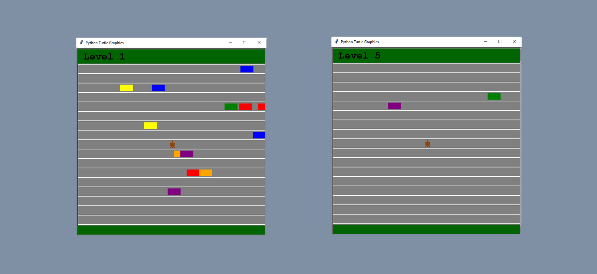

Turtle Cross
Save the turtle by crossing the highway without being overridden by car. Start and finish on the grass. After you successfully arrive at the end of the first highway, your level will rise up and you will enter highway where ride faster cars. More highways you cross, harder it is to cross one.